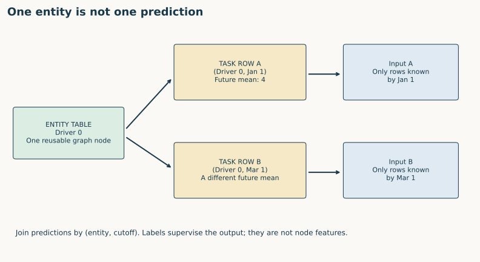
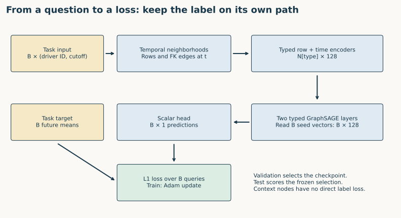
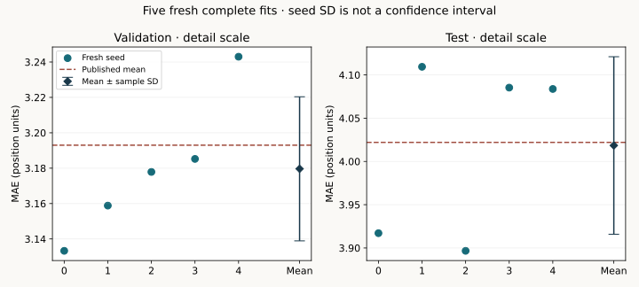

Year 4 · Quarter 1 · Lesson 124
Entity vs task table: what question does this row ask?
1 · The graph exists. What exactly are we predicting?¶
Lesson 122 built a relational entity graph (REG): each database row became a typed node, and foreign keys became edges. Lesson 123 constrained a query's neighborhood to its prediction time. Neither choice determines the target. The same driver node could support predicting finishing position, retirement, or a qualifying result. A task table supplies that missing contract.
Your tangible win: specify a task as (entity, prediction time, label), build its labels, and trace one row to a supervised prediction. Your notebook implements three functions that also run against the full released F1 task data. The core path is Sections 1–6; the reproduction and source audit are a second sitting.
This is central to our mission: a lower error only supports the RDL thesis when we can state which prediction problem produced it. Good graph construction cannot repair a target that silently changes with row order or uses the wrong time horizon.
Primary reading: Fey et al., RDL blueprint, Sections 3–4. For the measured experiment, read Robinson et al., RelBench v1, task definitions and Table 7. These are distinct papers; the numerical target here comes from RelBench v1.
2 · One entity row can support many prediction rows¶
| Table | Row means | Identity | Used for |
|---|---|---|---|
| Entity table: drivers | One driver | driverId | Reusable graph node and attributes |
| Task table: driver-position | One question about a driver at a cutoff | (driverId, date) within this task | Seed selection, seed time, supervised target |
| Event table: results | One recorded race result | resultId | Historical context or future label evidence, depending on cutoff |
For several tasks or horizons, extend query identity with the task/horizon ID. An entity-only dictionary loses repeated questions about the same person. A dataframe row number is merely storage order: shuffling predictions must not change a correctly aligned metric.
A task table's driverId references the entity table. It does not make the task's future position an input feature. In the released entity-task interface, the entity table, entity column, time column and target column are explicit metadata. Pinned task source.


Predict: Driver 0 appears at January 1 and March 1. How many graph entities, queries and labels does this describe? One entity, two queries and two labels. The two sampled computation graphs can differ because their cutoffs differ.
3 · Construct a label without constructing leakage¶
The released driver-position task predicts mean positionOrder over events in (t, t + 60 days]. “Two months” in the source description is implemented as 60 days, not two calendar months. A race exactly at t is outside the label; one at t + 60 days is inside. Released SQL.
Keep three operations separate:
- Choose the cohort: decide which entities receive a prediction at t.
- Build model input: use only information available at t, as in L123.
- Observe the target later: aggregate outcomes in the declared future window.
Future outcomes are legitimate label evidence. Feeding them into the row encoder or letting them decide a supposedly past-known cohort changes the problem.
In the toy example, Driver 0 has positions 99 on day 0, 2 on day 1, and 6 on day 60. Driver 1 first appears on day 2 with position 3. At t = day 0, the first driver's label is (2 + 6) / 2 = 4, not (99 + 2 + 6) / 3. Driver 1 has an observed future label of 3, but no past result at t.
Task 1 — make_labels: implement the open-left, closed-right window and the two explicit cohort choices. The released eligibility SQL requires a result after t - INTERVAL '1 year' with no upper bound. Because each emitted row already has a future result, that condition does not enforce past activity. The past exercise adds date <= t to eligibility. It retains the future outcome window unchanged.
The load-bearing window is visible in the implementation:
end = t + pd.Timedelta(days=60)
in_window = results.date.gt(t) & results.date.le(end)
# Aggregate only after applying the declared cohort and this window.
This is a source observation, not a claim that feature tensors contain future labels. The benchmark's observed-outcome population and a deployment cohort can differ. Even the past exercise only emits drivers with future races; it therefore remains conditioned on observed participation. A deployment design must separately decide what to return when a driver does not race.
No future race means no observed mean, not a mean position of zero. Likewise, an unfinished observation window must not be treated as a completed negative outcome. For a 60-day target we conservatively require full window completion; with reporting delays the maturity time can be later than t + 60 days.
4 · A task table is a contract you can check¶
Task 2 — validate_task: check entity references, unique (driverId, date) pairs, finite labels, and a label end after the cutoff. At training time, additionally require label_end <= fit_time. The latter assumes outcomes arrive by the window end in our exercise; real ingestion delays require an observed availability clock.
The two checks answer different questions:
# Repeated entities are allowed; repeated questions are not.
assert not rows.duplicated(["driverId", "date"]).any()
# Under our no-delay exercise contract:
assert rows.label_end.le(fit_time).all()
A chronological split should be justified using both query times and label windows. If a query is dated before the fitting cutoff but its label matures afterwards, its target was not available for that fit. Selecting a model on validation labels also requires those labels to have matured before the claimed selection time.
The pinned split builder generates training cutoffs backwards from validation_start - 60 days; validation cutoffs stop no later than test_start - 60 days; test cutoffs stop before the database's final complete 60-day horizon. Empty windows can produce no task rows. Pinned split builder.
Complete task reconstruction: PASS — all 8,712 rows.
| Split | Task rows | Grid cutoffs | Nonempty cutoffs | Rows excluded by past-only activity |
|---|---|---|---|---|
| train | 7453 | 332 | 254 | 955 |
| val | 499 | 30 | 23 | 33 |
| test | 760 | 40 | 33 | 42 |
Independent task audit. Past-only counts are a course intervention, not a changed benchmark score.
The comparison uses the full grid, including cutoffs that emit no rows. Identities agree exactly with both original SQL and the archive; numerical comparisons use absolute tolerance 1e-12. The exported notebook contains all 26,080 result events and released task rows, so your implementation repeats this check without accessing this repository.
5 · Model architecture: from one task row to one training loss¶


Diagram trace. Follow one task row to one root output and one loss term. Why are context nodes not extra supervised examples? On a narrow screen, scroll the figure sideways.
Trace a batch of B entity queries:
- Map each task row's foreign key to a driver node. Preserve its query ID and cutoff.
- Sample that driver's temporal neighborhood, keeping the root cutoff at every hop. Two questions about the same driver remain distinct query contexts.
- Encode each sampled table's attributes into width-128 vectors; add relative-time encodings for dated rows.
- Apply two typed GraphSAGE layers. Within-relation aggregation and across-relation combination follow the released model.
- Read the first B seed driver embeddings, apply the scalar head, and pair the B outputs with those task rows' B targets. Context drivers do not gain supervised targets just by appearing in the neighborhood.
- Minimize mean absolute error over training queries. Choose the checkpoint using validation MAE, then score the frozen selection on test queries.
The released trainer makes the supervision path inspectable:
pred = model(batch, task.entity_table).view(-1)
loss = torch.nn.functional.l1_loss(
pred.float(), batch[task.entity_table].y.float()
)
loss.backward()
optimizer.step()
Here the model returns seed outputs, and the task transform attaches seed targets. The outer training loop zeroes gradients before this fragment.
The notebook includes the complete visible model/trainer and original-source parity checks. It also uses L123's full graph payload to show one real labeled task row and its exact two-hop input neighborhood. The toy exhaustive sampler is for reasoning; the fresh experiment uses the release's bounded uniform fanouts [128, 64].
Task 3 — aligned_mae: join predictions to labels by (driverId, date), reject duplicate/missing/extra queries, and score the join. Our toy predictions arrive in reversed order: labels 4 and 3, predictions 5 and 5, MAE 1.5. The notebook then shuffles every real validation/test prediction table and checks all five author runs using your function.
6 · Entity tasks, link tasks, and temporal tasks¶
“Temporal” describes how information and targets depend on time; it is not an alternative to entity versus link prediction. F1 driver-position is both an entity task and a temporal task.
| Task family | Query | Target | Readout |
|---|---|---|---|
| Entity regression | (driver, t) | Future mean position | One seed vector → scalar |
| Entity classification | (customer, t) | Future churn event | One seed vector → probability |
| Link prediction | (source, candidate destination, t), or source with a candidate set | Future relationship | Pair score or candidate ranking |
For link tasks, candidate eligibility, negatives and the horizon are part of the task contract. Revisit L087 for link setup; this lesson does not train a link model. L125 will turn typed database columns into row features; L128 will build on this separation between the reusable graph and task-specific supervision.
7 · Full selected-experiment reproduction¶
Fresh author-reference execution: COMPLETE selected released-protocol experiment.
| Split | Mean MAE | Sample seed SD | Published mean | Verdict |
|---|---|---|---|---|
| val | 3.179653 | 0.040714 | 3.193 | CLOSE |
| test | 4.018438 | 0.102607 | 4.022 | CLOSE |
| Seed | Selected epoch | Validation MAE | Test MAE |
|---|---|---|---|
| 0 | 9 | 3.133287 | 3.917070 |
| 1 | 8 | 3.158849 | 4.109376 |
| 2 | 8 | 3.177878 | 3.896669 |
| 3 | 10 | 3.185244 | 4.085310 |
| 4 | 7 | 3.243005 | 4.083766 |
All 6,295 final predictions were independently scored. Maximum original-model output discrepancy: 2.86e-06. Measured pilot plus full-fit worker resource estimate: USD 0.0539, excluding unitemized overhead. The aggregate plan caps reservations plus overhead reserve at USD 10. Evidence.
All sampled batches also passed the inherited root-time/edge/query-isolation audit: 403,895 query occurrences, including repeated epochs. Availability and historical feature values remain unobserved.
These are fresh full-data author runs, not a longer toy fit or reused checkpoint. The target is the selected RelBench v1 Table 7 RDL driver-position experiment. Five seeds × ten complete epochs use all 7,453 training queries, with first-best validation selection. All 6,295 final predictions are independently rescored and replayed through the original model on the same sampled batches.
The protocol retains the release's preprocessing through the test cutoff, declared seeds, current pinned runtime, source fanouts and outcome-conditioned cohort. These differences and missing historical details prevent a claim of exact historical reproduction or whole-paper parity. A descriptive mean tolerance of 0.2 MAE was declared before the new scores; it is not a statistical equivalence test. Seed SD measures training variability conditional on this dataset and protocol, not uncertainty over future databases.


Exact commands and deviations · Visible task implementation · Visible full RDL implementation · Source manifest · Budget ledger.
8 · Practice, defend, return¶
Open student notebook · Executed reference · Solution notebook · Reference card.
TODO: implement the three functions before consulting the solution. CHECK: run the unchanged boundary tests, reconstruct all task rows and rescore the shuffled real predictions. EXIT: submit a written task specification and one annotated real example subgraph, then answer:
- Why do two cutoffs for one entity require two supervised examples?
- Which outcome events form your label, and which rows can the input see?
- Why does the released activity predicate fail to establish past activity? What remains outcome-conditioned after adding the upper bound?
- What happens to a query with no future event, or with an immature target?
- Why are an exact task-table reconstruction and a close benchmark mean different evidence?
Tomorrow, reconstruct the window without notes. In a week, transfer the contract to a customer/churn task and specify the no-event meaning. Author execution is not learner mastery: PENDING_WRITTEN_DEFENSE. Ask the teaching agent follow-up questions about any unclear window, identity, source discrepancy or tensor path.
Carry this forward. Turn the allowed mixed-type feature columns into trainable row vectors. Continue to Lesson 125.